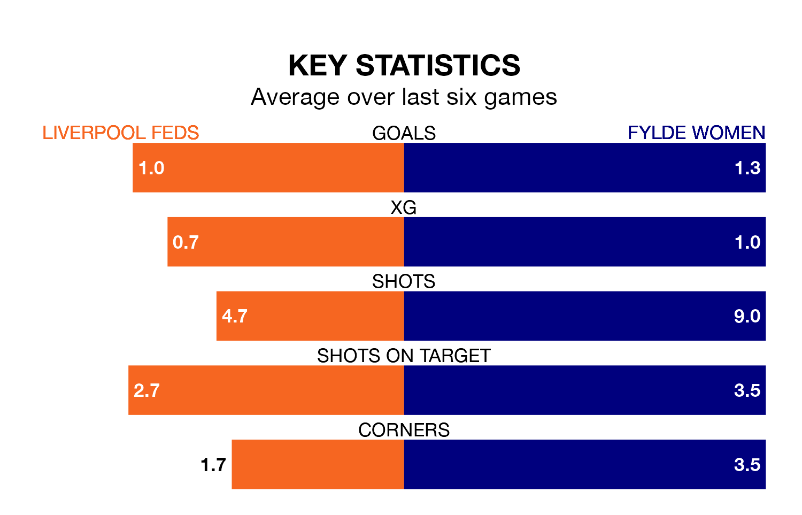

Fylde Women come to play Liverpool Feds on early Sunday in terrible form, having collected just two points from their last six games.
The visitors have drawn two and lost four of their last six fixtures, while Liverpool Feds have a win and three draws.
Fylde are bottom of the table after 13 games, of which they have won none and drawn three, earning three points.
Liverpool Feds are six places ahead of the away team in sixth, with four wins and four draws putting them on 16 points.
With 13 goals in 13 games so far this season, Fylde are the league's third-lowest scorers with 1.0 goals per game. And they are conceding more than average, letting in 50 goals at a rate of 3.8 per game.
The hosts are also below average scorers, with 1.6 goals per game, compared to a league average of 1.8. They have conceded 2.1 goals per game.
In the last three years, Liverpool Feds and Fylde have played each other on three occasions. Liverpool Feds won one of them and they drew the other.
Their last meeting was on October 12, when they played out a 2-2 draw.
Liverpool Feds's last match was on January 14, a 0-0 draw against West Brom WFC.
Fylde lost 6-0 against Nottingham Forest Women last time out, on February 4.
Updated: 13:52 (UTC), 05/02/24